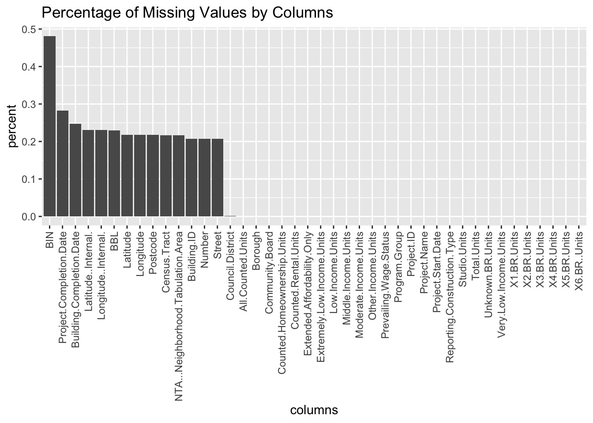

Chapter 4 Missing values
Before we can really start the analysis work, we need to carefully observe the missing values and the patterns to make sure that the so that it is reasonable to remove those missing values. Otherwise, we have to replace these missing values with different numbers according to some domain knowledge or find some other data resources to work on.
We will first look at the Local Law 44 Unit Income Rent data.
The histogram includes all variables in the data set and we calculate the percentage of missing values in each variables. It turns out that the missing values mostly appear in the columns related to Initial Legal Rent. Even though initial legal rent does provide some information about the apartments, it makes more sense to use actual rent rather than initial rent since it is more closely related to people’s daily life and it represents more about how much people actually pay for the apartments. Therefore, directly removing these columns will not influence our research. Meanwhile, we also notice that there are a number of missing values in columns related to actual rent. To determine how we should treat them, we need to understand their distributions or patterns first. Missing values are also included in the bedroom size and building id, columns unrelated to our project. So we will remove them.
Now, we are going to look in to the patterns of missing values in each variables.
Patterns of Missing Values

The plot shows that the missing patterns of the actual rent variables is not quite associated with values of other variables. However, we notice that there are big gaps in the graph, meaning that there are a number of consecutive rows with missing actual rent values. After look into the data set, we realize that the data with same project id will have either all missing values or no missing values in actual rent. It is reasonable to assume that the rows with missing actual values are from uncompleted projects. Since we more care about the information of apartments that are actually rented, we can directly remove these rows with missing actual rent.

The histogram shows that, the data set Housing New York Units by Building also have a few columns with missing values. Column BIN has the highest percentage of missing values and it is about 47%. Columns Latitude..Internal, Longitude..Internal, BBL, Latitude, Longitude, Postcode, Building.ID all have percentages between 20%-25%. Column Council.Distinct has a few missing values and other columns have no missing values. Among these variables, BIN, BBL and Building.ID are not related to our project, and we will remove these columns. Latitude..Internal and Longitude..Internal is not needed because we will use Latitude and Longitude. For our work in terms of spatial information, we will use census tract or latitude longitude only. Therefore, all the columns with missing values can be directly removed.

Since we are also curious about spatial distribution of missing values, we plot the percentage of missing values for different boroughs. Staten Island has the highest percentage of missing values and Manhattan has the lowest. Interestingly, the percentage of missing values are roughly proportional to the driving distances to Manhattan.